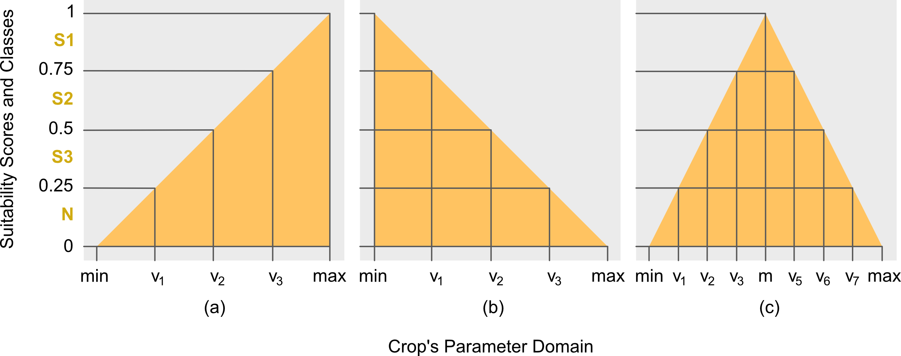
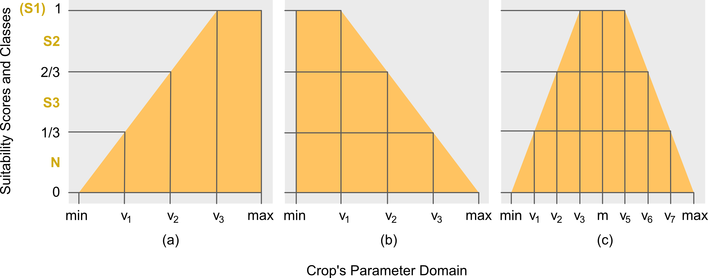
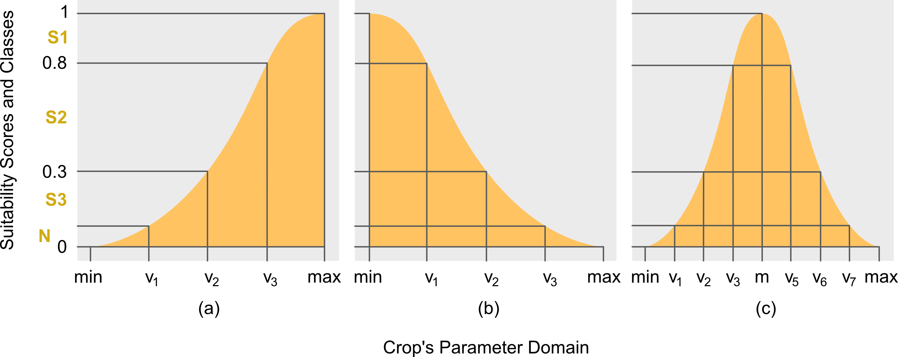

vignettes/a02_theory_of_suit.Rmd
a02_theory_of_suit.RmdTo better interpret the results provided by the APIs, this article will present the methodology/theory used by ALUES for computing the suitability scores. In its simplest form, the task of evaluating land suitability is to map an input characteristics of the land unit into the suitability class of the target parameter or factor. This is done by checking whether the input characteristic is within any of the suitability classes. Consider for example the following data:
## Loading required package: Rcpp
BANANATerrain## code s3_a s2_a s1_a s1_b s2_b s3_b wts
## 1 Slope1 6.0 4 2 <NA> <NA> <NA> <NA>
## 2 Slope2 16.0 8 4 <NA> <NA> <NA> <NA>
## 3 Slope3 30.0 16 8 <NA> <NA> <NA> <NA>
## 4 Flood 2.5 2 1 <NA> <NA> <NA> 1
## 5 Drainage 4.0 3 2 <NA> <NA> <NA> 2
## 6 SlopeD 3.0 2 1 <NA> <NA> <NA> 1If an input land unit has terrain with slope of 1 degree, then
according to BANANATerrain crop requirement, the land unit
is highly suitable (S1) for farming banana. In this example,
the suitability score is the 1 degree slope, since this is the
statistics of the land unit directly compared to the intervals of the
suitability classes (the columns: s1 - highly suitable, s2 - suitable,
s3 - marginally suitable) provided in BANANATerrain.
Further, suppose the input land unit is known to flood, then input land
unit has Flood factor equal to 2 (i.e. short time according to the
metric of Flood factor), and according to BANANATerrain,
the land unit is not highly suitable (S1) but rather
suitable (S2). In this case, the suitability scores of the land
unit for factors SlopeD and Flood are 1 and 2, respectively, with the
corresponding classes of S1 and S2, respectively. However, these scores
can be further summarized into a single value known as the overall
suitability score, albeit it won’t be straightforward. This is due
to the units or metric of the suitability scores, SlopeD is in terms of
degrees, so a score of 1, means 1 degree, whereas Flood is in terms of
time, so a score of 2, means short time. Two different metrics cannot be
combined into one, this is where the concept of membership function
comes in.
The limits of each suitability class specified for each factor in any
crop requirement, example BANANATerrain, forms what is
referred in here as the unstandardized suitability class
intervals. The term unstandardized follows from the fact
that the class intervals across factors or parameters have different
units, as already emphasized earlier. It would be convenient, therefore,
to have a uniform or standardized unit or metric across factors. In this
article, this is referred to as the standardized suitability
scores and standardized class intervals. For purpose of
brevity and distinction, the unstandardized suitability class
intervals are now referred to as the parameter class
intervals or parameter intervals, since the former is
specified across parameters of any crop requirement.
The idea of membership function is to standardize the parameter class intervals into a standardized suitability class. For purpose of brevity, the latter is now simply referred to as the suitability class. The standardization is done by mapping the parameter intervals into a space of unit interval, i.e. \(\mathbb{R}_{[0,1]}\). More formally, Definitions 1-3 are the mathematical formulations of the concepts used in this article.
The membership function (MF) is used to standardized the scores and the parameters intervals across factors. More formally, it is defined in Definition 1 below. There are choices for the shapes of MF, for ALUES there are three: triangular, trapezoidal and Gaussian. Each of the MF can take either partial or complete face. For triangular, refer to Definitions 4-6; for trapezoidal, refer to Definitions 7-9; and for Gaussian, refer to Definition 10.
Referring back to BANANATerrain, the parameter intervals
for the suitability classes of SlopeD can be written explicitly as
follows: [min, 1) for S1; [1, 2) for S2; and [2, 3] for S3. This
assignment is based on the classification used by Yen et al. (2006). The
not-suitable (N) class is not indicated since it is understood
that values greater than the S3’s upper limit or less than the S1’s
lower limit (if exists), are assigned to class N. Given this ordering of
crop’s parameter interval limits, the appropriate MF is the right
triangular MF (Fig. 1b). This follows from the fact that the
most-suitable (or highly-suitable) class S1 has
interval limits less than the limits of other suitability classes. By
doing so, the crop’s parameter interval limits are arranged in ascending
order in the \(x\)-axis on points \(v_1\), \(v_2\) and \(v_3\), respectively, as shown in Fig.
1b.
To complete the computation, the min and
max limits, which are notated as \(v_0\) and \(v_p\) (in this case, \(v_p=v_4\) since \(p=4\)), respectively, must therefore be
specified. In ALUES, however, these values can be assigned by the users
themselves based on their expert opinions. Otherwise, the package will
set the \(\mathrm{min}:=v_0=0\) and
\(\mathrm{max}:=v_p:=v_{p-1}+\gamma=v_3+\gamma\)
(\(\gamma\) is defined in Definition 4)
by default. As an example (for SlopeD), the max is mathematically
computed as follows: \[\begin{align}
\gamma :=&\;\frac{(v_2-v_1)+(v_3-v_2)}{2}\nonumber\\
=&\;\frac{(2-1)+(3-2)}{2} = 1,
\end{align}\] so that \[\begin{align}
\mathrm{max}:=&\;v_p:=v_3+\gamma\nonumber\\
=&\;3+\frac{(2-1)+(3-2)}{2}=4.
\end{align}\]
This section presents the complete definitions of the theory used in
the core algorithms of the package.
Definition 1
(Membership Function). Let \(\mathscr{X}\subseteq \mathbb{R}\) and \(\mathscr{Y}\subseteq \mathbb{R}_{[0,1]}\),
then \(\mu:\mathscr{X}\rightarrow\mathscr{Y}\) is
a membership function (MF).
Remark 1. In the
context of land evaluation, \(\mathscr{X}\) is the space of the parameter
values of the input land unit, and \(\mathscr{Y}\) is the space of the
suitability scores.
Definition 2 (Class
Intervals). Let \(u_i\in\mathbb{R},
\forall i\in\mathbb{N}_{[0,p-1]}\), then the partitions \([u_i,u_{i+1})\in\mathscr{U}\) are defined
as the suitability class intervals.
Definition
3 (Parameter Intervals). Let \(v_i\in\mathbb{R}, \forall
i\in\mathbb{N}_{[0,p-1]}\), then \([v_i,v_{i+1})\in \mathscr{V}\) are defined
to be the crop’s parameter intervals.
Remark 2.
\(v_i\) is the interval limit of the
factor or parameter. \(v_0\) and \(v_p\) are the minimum and maximum factor
limits, respectively, both needs to be computed.

Definition 4 (Left Triangular). Let \(x_{jk}\in\mathscr{X}\) be the \(j\)th land unit’s actual value for any
target factor \(k\), \(\forall j \in \mathbb{N}_{[1,n]}\) and
\(\forall k \in \mathbb{N}_{[1,m]}\),
and let \([v_{i},v_{i+1})\in\mathscr{V}\) be the
crop’s parameter intervals, \(\forall
i\in\mathbb{N}_{[0,p-1]}\), then the lower or left
triangular MF, herein notated as \(\mu_{\triangle_{\downarrow}}\), is defined
as follows: \[\begin{equation}
\mu_{\triangle_{\downarrow}}(x_{jk}):=
\begin{cases}
\displaystyle\frac{x_{jk}-\mathrm{min}}{\mathrm{max}-\mathrm{min}},&\mathrm{min}\leq
x_{jk}\leq\mathrm{max}\\
0,&\mathrm{otherwise}
\end{cases}
\end{equation}\] where \(\mathrm{min}:=
v_0:= v_1-\gamma\), \(\mathrm{max}:=
v_p:= v_{p-1}+\gamma\), and \(\gamma:=\frac{1}{p-2}\sum_{i=1}^{p-2}(v_{i+1}-v_{i})\).
Remark 3. ALUES sets the \(\mathrm{min}:=v_0=0\) for all MFs, unless
specified by the user explicitly.
Definition 5 (Right Triangular). From Definition 4, the upper or right triangular MF, herein notated as \(\mu_{\triangle_{\uparrow}}\), is defined as follows: \[\begin{equation}\label{eq:rtri} \mu_{\triangle_{\uparrow}}(x_{jk}):= \begin{cases} \displaystyle\frac{\mathrm{max}-x_{jk}}{\mathrm{max}-\mathrm{min}},&\mathrm{min}\leq x_{jk}\leq\mathrm{max}\\ 0,&\mathrm{otherwise} \end{cases}. \end{equation}\]
Definition 6 (Full Triangular). From Definition 4 and 5, the full triangular MF, herein notated as \(\mu_{\triangle}\), is defined as follows: \[\begin{equation} \mu_{\triangle}(x_{jk}):= \begin{cases} 0,&x_{jk}\leq 0\\ \mu_{\triangle_{\downarrow}}(x_{jk}),&\mathrm{min}\leq x_{jk}\leq\mathrm{m}\\ \mu_{\triangle_{\uparrow}}(x_{jk}),&\mathrm{m}<x_{jk}<\mathrm{max}\\ 0,&x_{jk}\geq \mathrm{max} \end{cases} \end{equation}\] where \(\mathrm{m}:= \frac{v_{i}^{*}+v_{i+1}^*}{2}\) such that \(v_i^*<\mathrm{m}<v_{i+1}^*\), and \(v_i^{*}\) and \(v_{i+1}^*\) are interval limits right next to m.

Definition 7 (Left Trapezoidal). From Definition 4, the
lower or left trapezoidal MF, herein notated as \(\mu_{\bigtriangledown_{\downarrow}}\), is
defined as follows: \[\begin{equation}
\mu_{\bigtriangledown_{\downarrow}}(x_{jk}):=
\begin{cases}
\displaystyle\frac{x_{jk}-\mathrm{min}}{\mathrm{max}-\mathrm{min}},&\mathrm{min}\leq
x_{jk}\leq v_{p-1}\\
1,&v_{p-1}<x_{jk}\leq \mathrm{max}\\
0,&\mathrm{otherwise}
\end{cases},
\end{equation}\] where \(\mathrm{min},\mathrm{max}\) and \(\gamma\) are the same as in Definition
4.
Definition 8 (Right Trapezoidal). From Definition 4, the upper or right trapezoidal MF, herein notated as \(\mu_{\bigtriangledown_{\uparrow}}\), is defined as follows: \[\begin{equation} \mu_{\bigtriangledown_{\uparrow}}(x_{jk}):=\begin{cases} 1,&\mathrm{min}\leq x_{jk}\leq v_1\\ \displaystyle\frac{\mathrm{max}-x_{jk}}{\mathrm{max}-\mathrm{min}},&v_1<x_{jk}\leq\mathrm{max}\\ 0,&\mathrm{otherwise} \end{cases}. \end{equation}\]
Definition 9 (Full Trapezoidal). From Definition 7 and 8, the full trapezoidal MF, herein notated as \(\mu_{\bigtriangledown}\), is defined as follows: \[\begin{equation} \mu_{\bigtriangledown}(x_{jk}):= \begin{cases} \mu_{\bigtriangledown_{\downarrow}}(x_{jk}),&\mathrm{min}\leq x_{jk}\leq v_i^*\\ 1,&v_i^*<x_{jk}\leq v_{i+1}^*\\ \mu_{\bigtriangledown_{\uparrow}}(x_{jk}),&v_{i+1}^*<x_{jk}\leq\mathrm{max}\\ 0,&\mathrm{otherwise} \end{cases}, \end{equation}\] where \(v_i^*\) and \(v_{i+1}^*\) are defined in Definition 6.

Definition 10 (Gaussian MF). From Definition 4, the
full Gaussian MF, herein notated as \(\mu_{\curlywedge}\), is defined as follows:
\[\begin{equation}
\mu_{\curlywedge}(x_{jk}):=\exp\left[-\frac{(x_{jk}-\alpha)^2}{2\sigma^2}\right],
\end{equation}\] where \(\alpha\in(-\infty,\infty)\) and \(\sigma\in(0,\infty)\).
Remark 4. For partial Gaussian MF, however, the adjustment is done using the location hyperparameter. In particular, if \(\alpha=\mathrm{min}\), then the model is right Gaussian function. However, if \(\alpha=\mathrm{max}\), then the model is left Gaussian function.
Definition 11 (Overall Suitability). Let \(y_{jk}\in\mathscr{Y}\) be the \(j\)th land unit’s suitability score for any target factor \(k\), \(\forall j\in \mathbb{N}_{[1,n]}\) and \(\forall k\in\mathbb{N}_{[1,m]}\); and let \(w_{k}\in\mathbb{N}_{[1,3]}\) be the weight of the \(k\)th factor; then, \(\mathbf{y}_{j}:=[y_{j1},\cdots,y_{jm}]^{\text{T}}\in\mathbb{R}^m\) is the vector suitability scores of all target factors, and \(\mathbf{w}:=[w_1,\cdots,w_m]^{\text{T}}\in\mathbb{N}^m\) is the corresponding weights vector. The overall suitability using average aggregation, herein notated as \(\bar{\mu}\), of a given land unit is computed as follows: \[\begin{equation}\label{eq:overallsuit} \bar{\mu}(\mathbf{y}_j|\mathbf{w}):= \mathbf{y}_j^{\mathrm{T}}\lambda(\mathbf{w})=\sum_{\forall k}y_{jk}*\lambda (w_k), \end{equation}\] where \(\lambda(w_k):= \frac{\eta-w_k}{\delta}, \eta:=\sum_{\forall k} w_k\) and \(\delta:=\sum_{\forall k}(\eta - w_k)\). For minimum (notated as \(\tilde{\mu}\)) and maximum (notated as \(\hat{\mu}\)) aggragation functions, the following are the definitions: \[\begin{equation} \tilde{\mu}(\mathbf{y}_j):=\min(\{y_{j1}, \cdots,y_{jm}\}), \end{equation}\] and \[\begin{equation} \hat{\mu}(\mathbf{y}_j):=\max(\{y_{j1}, \cdots,y_{jm}\}). \end{equation}\]